library(tidyverse)
library(magrittr)
library(skimr)
library(janitor)
library(ggbeeswarm)
library(corrr)
library(corrplot)
library(GGally)
theme_set(theme_bw())
set.seed(197805)Statistical thinking (bois)
Exploratory data analysis (EDA)
Before diving into statistical inference, you should first explore your data by plotting them and computing simple summary statistics. This process, called exploratory data analysis, is a crucial first step in statistical analysis of data.
Exploratory data analysis can never be the whole story, but nothing else can serve as the foundation stone. — John Tukey
Penguins dataset
The palmerpenguins data contains size measurements for three penguin species observed on three islands in the Palmer Archipelago, Antarctica.
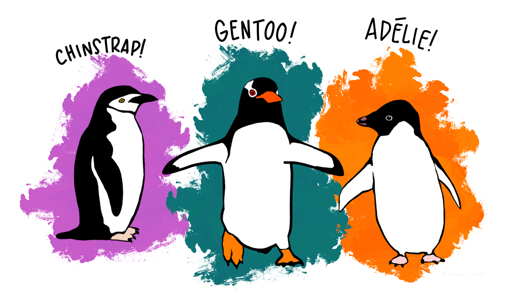
The palmerpenguins package contains two datasets. One is called penguins, and is a simplified, curated version of the second one penguins_raw; see ?penguins for more information.
Both datasets contain data for 344 penguins. There are 3 different species of penguins in this dataset, collected from 3 islands in the Palmer Archipelago, Antarctica.
library(palmerpenguins)
data(package = "palmerpenguins")
citation(package = "palmerpenguins")
To cite palmerpenguins in publications use:
Horst AM, Hill AP, Gorman KB (2020). palmerpenguins: Palmer
Archipelago (Antarctica) penguin data. R package version 0.1.0.
https://allisonhorst.github.io/palmerpenguins/. doi:
10.5281/zenodo.3960218.
A BibTeX entry for LaTeX users is
@Manual{,
title = {palmerpenguins: Palmer Archipelago (Antarctica) penguin data},
author = {Allison Marie Horst and Alison Presmanes Hill and Kristen B Gorman},
year = {2020},
note = {R package version 0.1.0},
doi = {10.5281/zenodo.3960218},
url = {https://allisonhorst.github.io/palmerpenguins/},
}penguinsstr(penguins) # or glimpse(penguins)tibble [344 × 8] (S3: tbl_df/tbl/data.frame)
$ species : Factor w/ 3 levels "Adelie","Chinstrap",..: 1 1 1 1 1 1 1 1 1 1 ...
$ island : Factor w/ 3 levels "Biscoe","Dream",..: 3 3 3 3 3 3 3 3 3 3 ...
$ bill_length_mm : num [1:344] 39.1 39.5 40.3 NA 36.7 39.3 38.9 39.2 34.1 42 ...
$ bill_depth_mm : num [1:344] 18.7 17.4 18 NA 19.3 20.6 17.8 19.6 18.1 20.2 ...
$ flipper_length_mm: int [1:344] 181 186 195 NA 193 190 181 195 193 190 ...
$ body_mass_g : int [1:344] 3750 3800 3250 NA 3450 3650 3625 4675 3475 4250 ...
$ sex : Factor w/ 2 levels "female","male": 2 1 1 NA 1 2 1 2 NA NA ...
$ year : int [1:344] 2007 2007 2007 2007 2007 2007 2007 2007 2007 2007 ...skim(penguins) # or summary(penguins)| Name | penguins |
| Number of rows | 344 |
| Number of columns | 8 |
| _______________________ | |
| Column type frequency: | |
| factor | 3 |
| numeric | 5 |
| ________________________ | |
| Group variables | None |
Variable type: factor
| skim_variable | n_missing | complete_rate | ordered | n_unique | top_counts |
|---|---|---|---|---|---|
| species | 0 | 1.00 | FALSE | 3 | Ade: 152, Gen: 124, Chi: 68 |
| island | 0 | 1.00 | FALSE | 3 | Bis: 168, Dre: 124, Tor: 52 |
| sex | 11 | 0.97 | FALSE | 2 | mal: 168, fem: 165 |
Variable type: numeric
| skim_variable | n_missing | complete_rate | mean | sd | p0 | p25 | p50 | p75 | p100 | hist |
|---|---|---|---|---|---|---|---|---|---|---|
| bill_length_mm | 2 | 0.99 | 43.92 | 5.46 | 32.1 | 39.23 | 44.45 | 48.5 | 59.6 | ▃▇▇▆▁ |
| bill_depth_mm | 2 | 0.99 | 17.15 | 1.97 | 13.1 | 15.60 | 17.30 | 18.7 | 21.5 | ▅▅▇▇▂ |
| flipper_length_mm | 2 | 0.99 | 200.92 | 14.06 | 172.0 | 190.00 | 197.00 | 213.0 | 231.0 | ▂▇▃▅▂ |
| body_mass_g | 2 | 0.99 | 4201.75 | 801.95 | 2700.0 | 3550.00 | 4050.00 | 4750.0 | 6300.0 | ▃▇▆▃▂ |
| year | 0 | 1.00 | 2008.03 | 0.82 | 2007.0 | 2007.00 | 2008.00 | 2009.0 | 2009.0 | ▇▁▇▁▇ |
Quantitative EDA: Penguins are fun to summarize!
Key concepts:
- descriptive statistics and summary statistics vs. inferential statistics (or statistical inference)
penguins %>% count(species)penguins %>%
count(species, island, .drop = FALSE)penguins %>% count(species, sex, .drop = FALSE)There are several kinds of mean in statistics. Informally, a measure of the location/center/central tendency of the data.
The mean of a set of observations is the arithmetic average of the values.
\[ \text{arithmetic mean} = \bar{x} = \frac{1}{n} \sum_{i=1}^{n} x_i \] The mean is not necessarily the same as the middle value (median), or the most likely value (mode).
penguins %>%
group_by(species) %>%
summarize(across(where(is.numeric), mean, na.rm = TRUE))penguins %>%
group_by(species) %>%
summarize(across(where(is.numeric), median, na.rm = TRUE))mode <- function(x, na.rm = FALSE) {
if(na.rm){
x = x[!is.na(x)]
}
ux = unique(x)
return(ux[which.max(tabulate(match(x, ux)))])
}
penguins %>%
group_by(species) %>%
summarize(across(where(is.numeric), mode, na.rm = TRUE))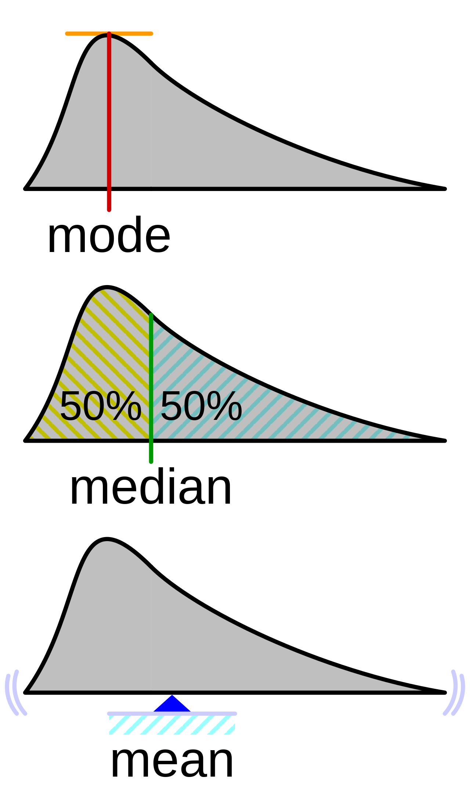
The mean is heavily influenced by outliers, i.e., data points whose value is far greater or less than most of the rest of the data.
The median is a special name for the 50th percentile, i.e., the value below (or above) which are 50% of the data.
penguins %>% group_by(species) %>% select(flipper_length_mm) %>% skim()Adding missing grouping variables: `species`| Name | Piped data |
| Number of rows | 344 |
| Number of columns | 2 |
| _______________________ | |
| Column type frequency: | |
| numeric | 1 |
| ________________________ | |
| Group variables | species |
Variable type: numeric
| skim_variable | species | n_missing | complete_rate | mean | sd | p0 | p25 | p50 | p75 | p100 | hist |
|---|---|---|---|---|---|---|---|---|---|---|---|
| flipper_length_mm | Adelie | 1 | 0.99 | 189.9 | 6.54 | 172 | 186 | 190 | 195 | 210 | ▁▆▇▅▁ |
| flipper_length_mm | Chinstrap | 0 | 1.00 | 195.8 | 7.13 | 178 | 191 | 196 | 201 | 212 | ▁▅▇▅▂ |
| flipper_length_mm | Gentoo | 1 | 0.99 | 217.2 | 6.48 | 203 | 212 | 216 | 221 | 231 | ▂▇▇▆▃ |
The variance is the mean squared distance of the data from their mean. Informally, a measure of the variability/spread of the data.
\[ \text{variance} = \frac{1}{n} \sum_{i=1}^{n}(x_i - \bar{x})^2 \]
popvar <- function(x, na.rm = FALSE) {
if(na.rm){
x = x[!is.na(x)]
}
return(mean((x-mean(x))^2))
}
penguins %>%
group_by(species) %>%
summarize(across(where(is.numeric), popvar, na.rm = TRUE))The standard deviation is the square root of the variance.
popsd <- function(x, na.rm = FALSE) {
if(na.rm){
x = x[!is.na(x)]
}
return(sqrt(mean((x-mean(x))^2)))
}
penguins %>%
group_by(species) %>%
summarize(across(where(is.numeric), popsd, na.rm = TRUE))n.b.: The var() and sd() functions calculate the sample variance/standard deviation and use n-1 ‘degrees of freedom’, where n is the number of observations.
The IQR is XXX. Informally, a measure of the spread of the data.
Graphical EDA: Penguins are fun to visualize!
ggplot(data = penguins, aes(x = flipper_length_mm, y = body_mass_g, color = species)) + geom_point()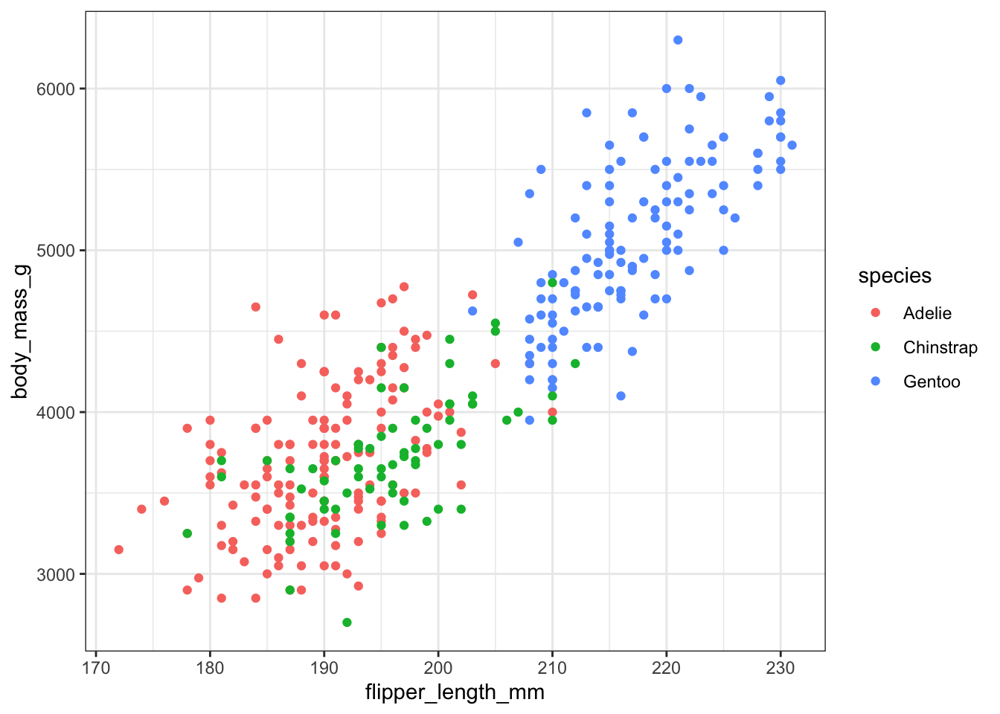
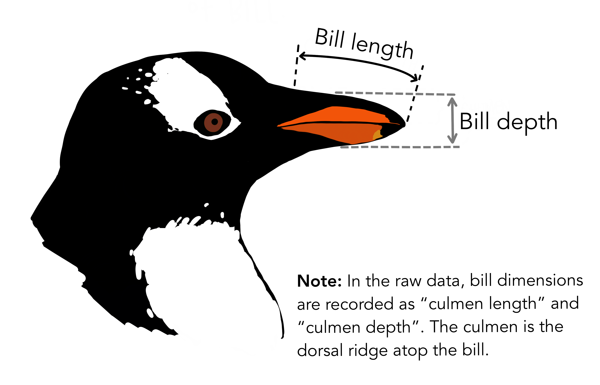
ggplot(data = penguins, aes(x = bill_length_mm, y = bill_depth_mm, color = species)) + geom_point()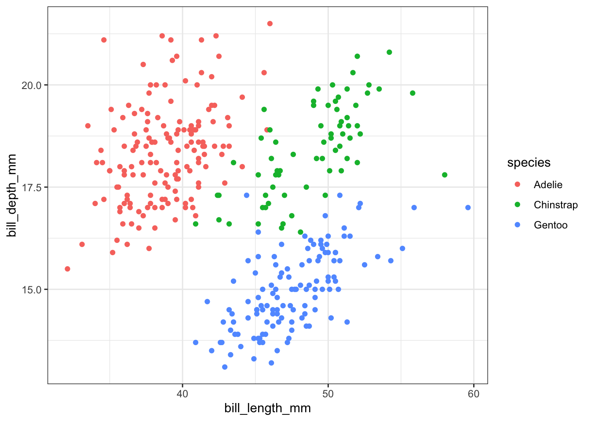
ggplot(data = penguins, aes(x = flipper_length_mm, y = body_mass_g, color = sex)) + geom_point() + facet_wrap(~ species)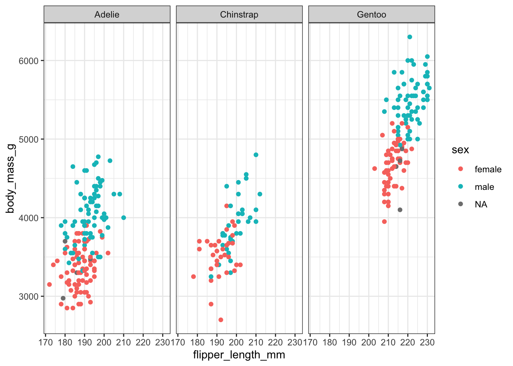
penguins %>%
select(body_mass_g, ends_with("_mm")) %>%
correlate() %>%
rearrange() %>%
shave() %>%
rplot()Correlation computed with
• Method: 'pearson'
• Missing treated using: 'pairwise.complete.obs'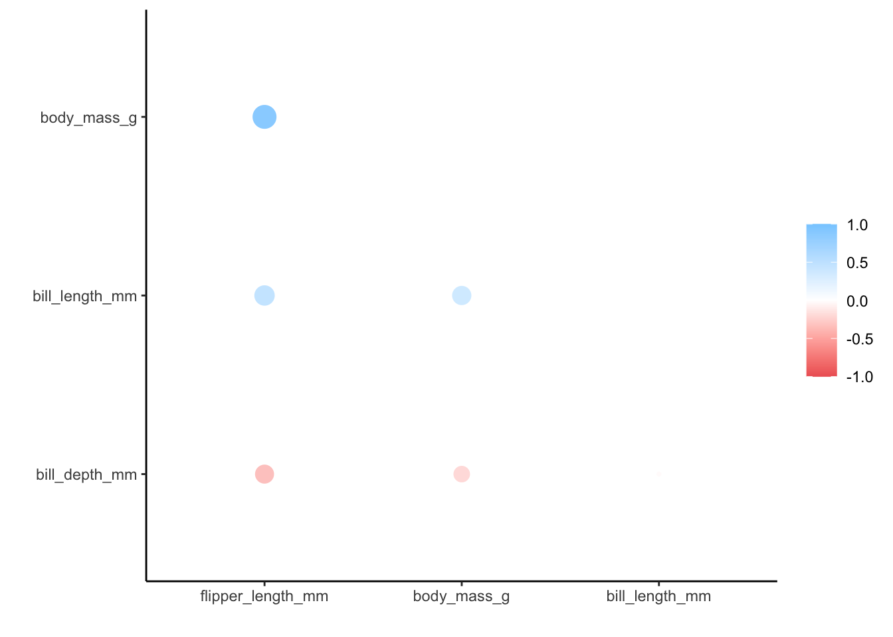
penguins %>%
select(body_mass_g, ends_with("_mm")) %>%
correlate() %>%
network_plot()Correlation computed with
• Method: 'pearson'
• Missing treated using: 'pairwise.complete.obs'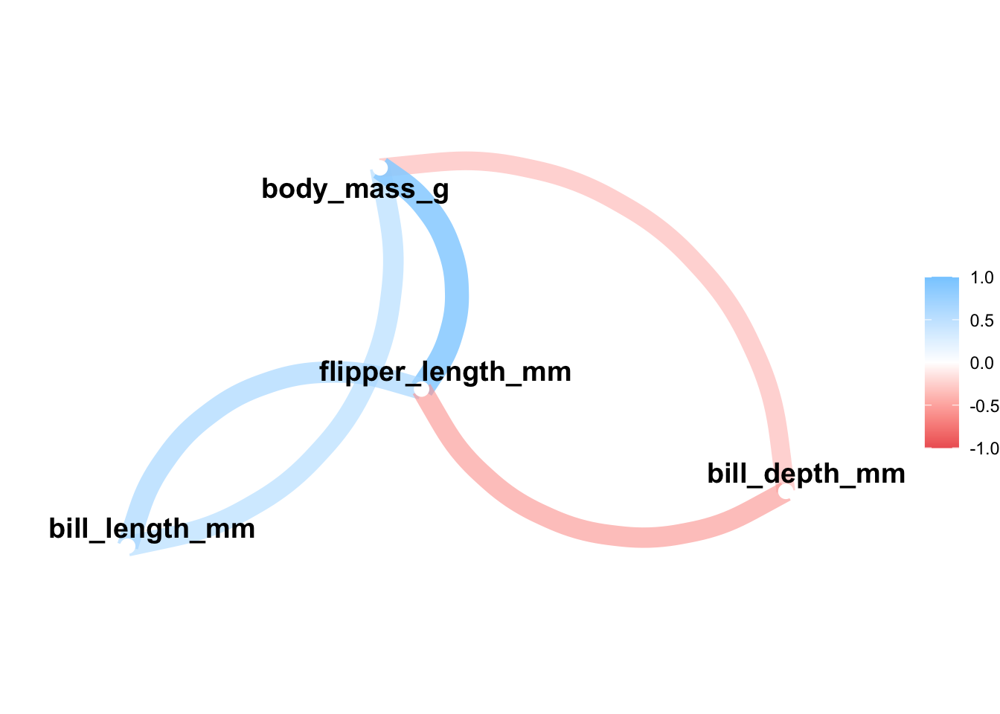
penguins %>%
select(species, body_mass_g, ends_with("_mm")) %>%
ggpairs(aes(color = species)) 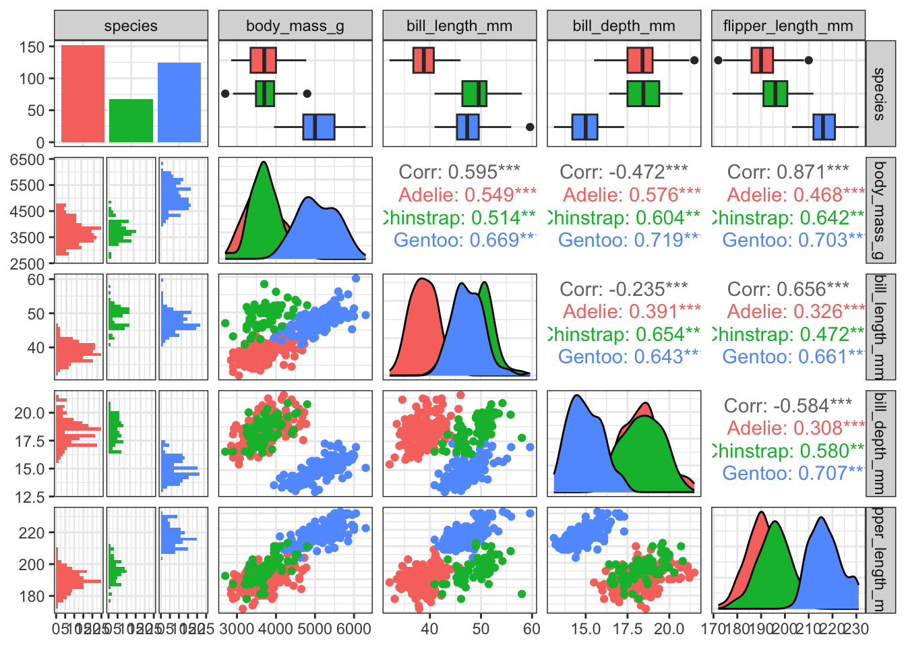
penguins %>%
select(body_mass_g, ends_with("_mm")) %>%
ggcorr()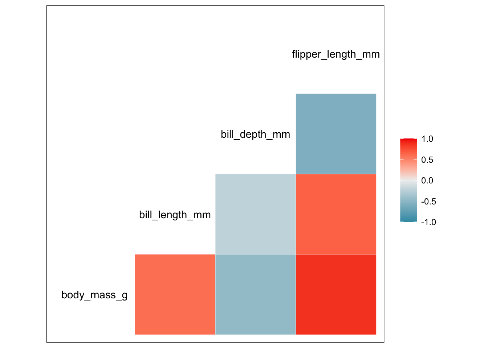
penguins %>%
select(body_mass_g, ends_with("_mm")) %>%
correlate(diagonal = TRUE) %>%
column_to_rownames("term") %>%
as.matrix() %>%
corrplot(type = "lower")Correlation computed with
• Method: 'pearson'
• Missing treated using: 'pairwise.complete.obs'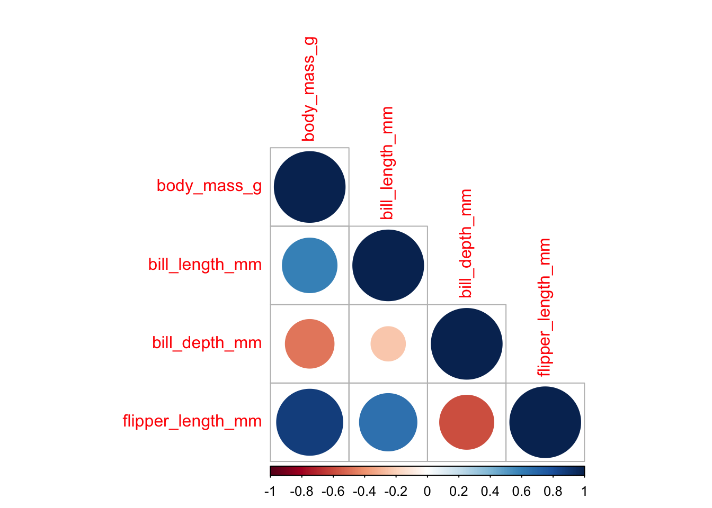
ggplot(data = penguins, aes(x = flipper_length_mm, fill = species)) + geom_histogram(alpha = 0.5, position = "identity")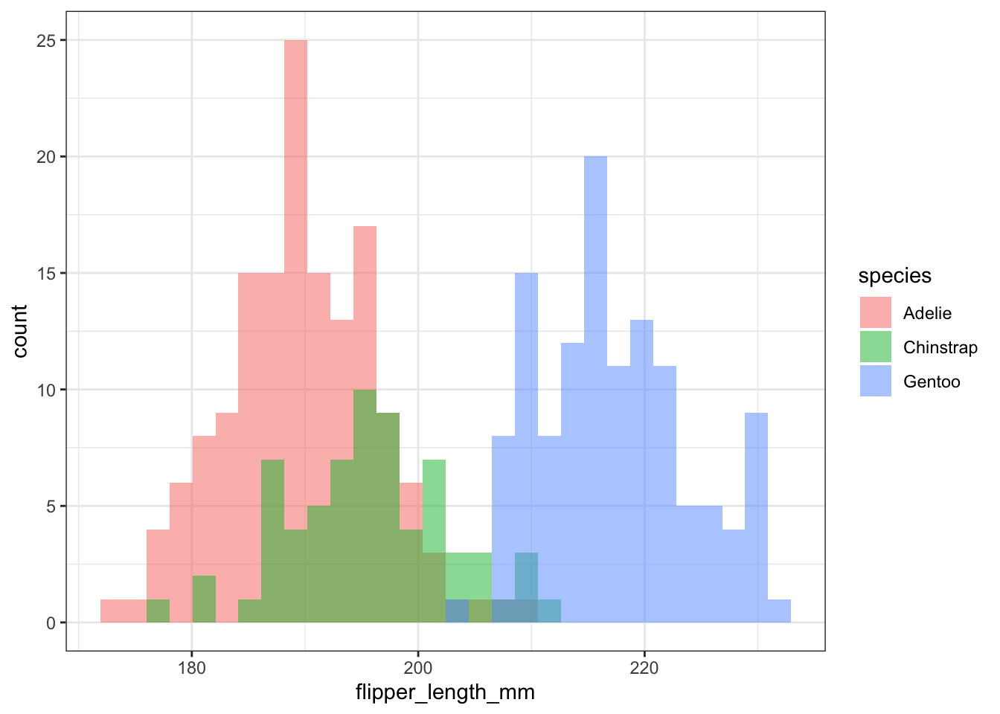
Unlike histograms, beeswarms can be used to plot data distributions while displaying all data points.
ggplot(data = penguins, aes(y = flipper_length_mm, x = species, color = species)) + geom_beeswarm()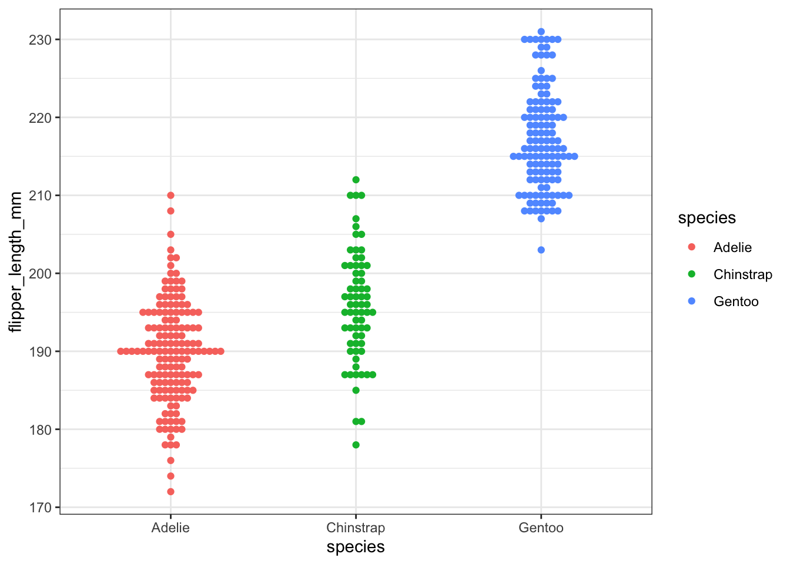
Beeswarms fail when there is a large number of data points!
A solution to this would be to plot the empirical cumulative distribution function (ECDF):
ggplot(data = penguins, aes(x = flipper_length_mm, color = species)) + stat_ecdf(geom = "point") + geom_hline(yintercept = 0.5)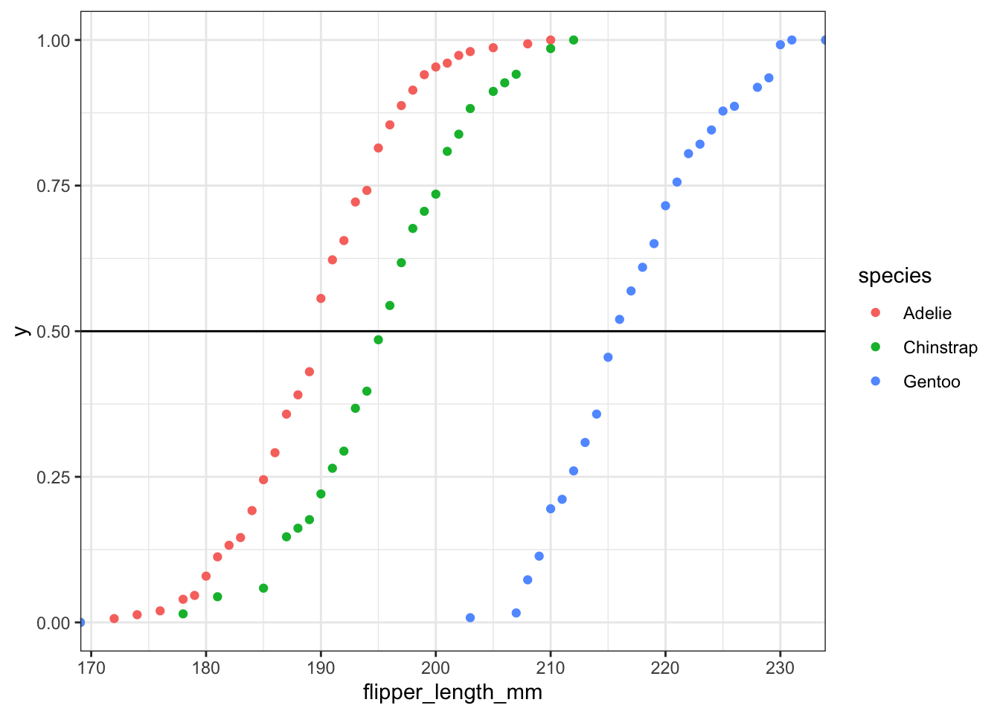
The horizontal line intercepts the ECDF at the median, i.e., the 50th percentile.
ggplot(data = penguins, aes(y= flipper_length_mm, color = species)) + geom_boxplot()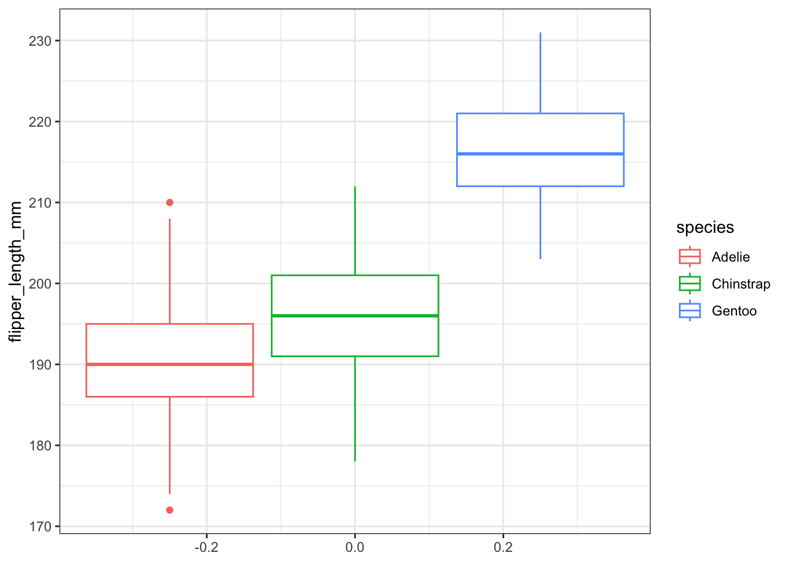
A box plot combines graphical and quantitative EDA by displaying the median (horizontal line, the 50th percentile), a box corresponding to the IQR (from the 25th to the 75th percentile), a vertical line corresponding to the min/max value or (if min/max values are not within the 1.5 IQR) the boundaries of the 1.5 IQR plus outliers as individual data points. Outliers are not necessarily erroneous data points.
Covariance and the Pearson correlation coefficient
The covariance is a measure of how two quantities vary together.
\[ \text{covariance} = \text{cov}_{xy} = \frac{1}{n} \sum_{i=1}^{n}(x_i - \bar{x})(y_i - \bar{y}) \]
The magnitude of the covariance is not easy to interpret because it is not normalized and hence depends on the magnitudes of the quantities of interest. The normalized version of the covariance, the Pearson correlation coefficient is a measure of linear correlation between two sets of data that always has a value between −1 and 1 (corresponding to perfect negative and positive linear correlation, and 0 corresponding to no linear correlation).
\[ \text{Pearson correlation coefficient} = r_{xy} = \frac{\text{cov}_{xy}}{\text{SD}_x \text{SD}_y} = \frac{\sum_{i=1}^{n}(x_i - \bar{x})(y_i - \bar{y})}{\sqrt{\sum_{i=1}^{n}(x_i - \bar{x})^2} \sqrt{\sum_{i=1}^{n}(y_i - \bar{y})^2}} \]
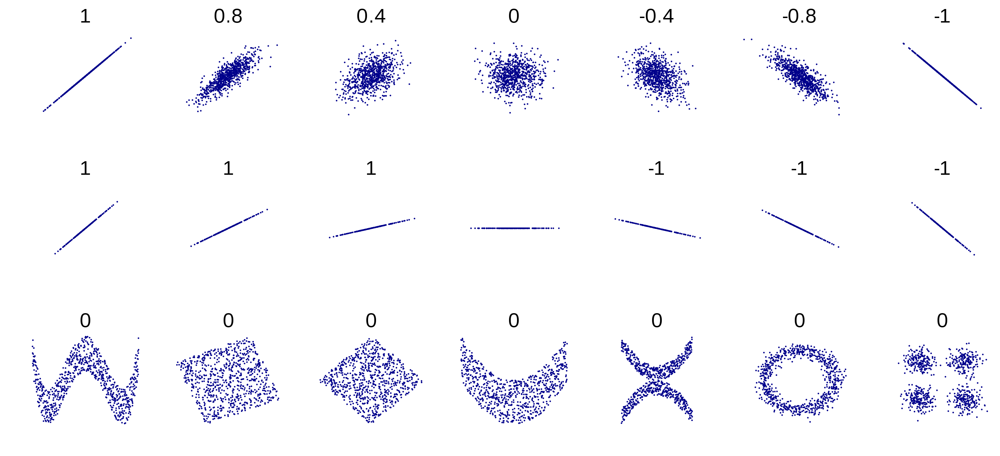
Probabilistic logic and statistical inference
Probability is a measure of uncertainty.
Random number generators and hacker statistics
Hacker statistics simulates a random experiment many many times to compute probabilities.
Hacker stats probabilities are computed as follows:
Determine how to simulate data (from data story to generative model)
Simulate many many times
The fraction of trials with the outcome(s) of interest approximates the probability of that outcome (or event).
A random experiment with exactly two possible outcomes (“success”/TRUE/1 or “failure”/FALSE/0) and in which the probability of “success” is the same every time the experiment is conducted is called a Bernoulli (or binomial) trial.
As an example, we repeatedly simulate a random experiment in which we flip a fair coin four times and record the number of “successes”/heads and calculate the probability of getting three heads out of four coin flips.
nsims = 1e4
nflips = 4
nsuccesses = 3
p = 0.5
outcomes = rbinom(n = nsims, size = nflips, prob = p)
mean(outcomes == nsuccesses)[1] 0.2558dbinom(x = 3, size = 4, prob = p)[1] 0.25Probability distributions and data stories: The Binomial distribution
From data story to generative model to probability distribution.
We simulated a story about a person flipping a coin. We did this to get the probability for each possible outcome of the story. That set of probabilities is called a probability mass function (PMF). A PMF is defined as the set of probabilities of discrete outcomes.
A PMF is a property of a discrete probability distribution, i.e., a mathematical description of outcomes.
XXX